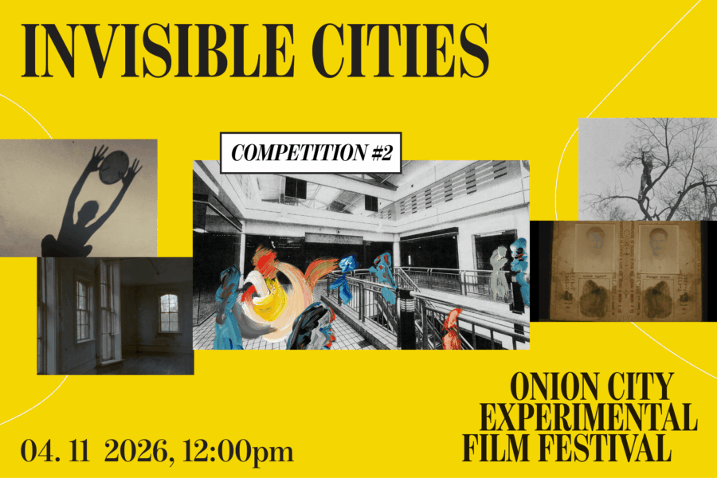

Onion City: Invisible Cities
Traipse through INVISIBLE CITIES, the domain of speculative societies evoked when the unexpected happens. Works in this program contend with isolation, utopianism, and apocalypse.
Lineup:
Domestic Demon | Anahid Yahjian | US/Portugal | 2026 | 6 min | Chicago Festival Premiere
The Phalanx | Ben Balcom | US | 2025 | 14 min | Chicago Festival Premiere
Evacuations | Lilli Carré | US | 2025 | 7 min | Chicago Festival Premiere
Fresh Values | Drew Durepos and Isaac Brooks | US | 2025 | 12 min
Hiding Places | Magdalena Bermudez | US | 2026 | 13 min | Chicago Festival Premiere
I Hear a City | Ciro Araujo | Brazil | 2026 | 15 min | World Festival Premiere